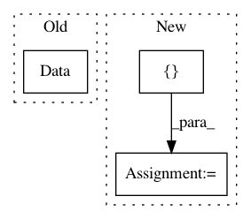

0d2bc15a92156ee1bc5a6c9cc29fd02c8a7dc15c,trunk/SUAVE/Input_Output/OpenVSP/vsp_read_wing.py,,vsp_read_wing,#Any#Any#,20
Before Change
a_value = vsp.GetParmVal(wing_id, "A", "XSecCurve_" + str(jj))
ideal_CL = int(np.around(vsp.GetParmVal(wing_id, "IdealCl", "XSecCurve_" + str(jj))*10))
series_vsp = int(vsp.GetParmVal(wing_id, "Series", "XSecCurve_" + str(jj)))
series_dict = Data({0:"63",1:"64",2:"65",3:"66",4:"67",5:"63A",6:"64A",7:"65A"}) // VSP series values.
series = series_dict[series_vsp]
airfoil.tag = "NACA " + series + str(ideal_CL) + str(thick_cord_round) + " a=" + str(np.around(a_value,1))
After Change
proj_span_sum = 0. // Projected.
segment_spans = [None] * (segment_num) // Non-projected.
segment_dihedral = [None] * (segment_num)
segment_sweeps_quarter_chord = [None] * (segment_num)
// Check for wing segment *inside* fuselage, then skip XSec_0 to start at first exposed segment.
if vsp.GetParmVal(wing_id, "Root_Chord", "XSec_0") == 1.:
start = 1
else:
start = 0
// -------------
// Wing segments
// -------------
// Convert VSP XSecs to SUAVE segments. (Wing segments are defined by outboard sections in VSP, but inboard sections in SUAVE.)
for i in xrange(start, segment_num+1):
segment = SUAVE.Components.Wings.Segment()
segment.tag = "Section_" + str(i)
thick_cord = vsp.GetParmVal(wing_id, "ThickChord", "XSecCurve_" + str(i-1))
segment.thickness_to_chord = thick_cord // Thick_cord stored for use in airfoil, below.
segment_root_chord = vsp.GetParmVal(wing_id, "Root_Chord", "XSec_" + str(i)) * units
segment.root_chord_percent = segment_root_chord / total_chord
segment.percent_span_location = proj_span_sum / (total_proj_span/2)
segment.twist = vsp.GetParmVal(wing_id, "Twist", "XSec_" + str(i-1)) * Units.deg
if i < segment_num: // This excludes the tip xsec, but we need a segment in SUAVE to store airfoil.
segment_sweeps_quarter_chord[i] = vsp.GetParmVal(wing_id, "Sec_Sweep", "XSec_" + str(i)) * Units.deg
segment.sweeps.quarter_chord = segment_sweeps_quarter_chord[i] // Used again, below
segment_dihedral[i] = vsp.GetParmVal(wing_id, "Dihedral", "XSec_" + str(i)) * Units.deg // Used for dihedral computation, below.
segment.dihedral_outboard = segment_dihedral[i]
In pattern: SUPERPATTERN
Frequency: 3
Non-data size: 3
Instances
Project Name: suavecode/SUAVE
Commit Name: 0d2bc15a92156ee1bc5a6c9cc29fd02c8a7dc15c
Time: 2018-08-09
Author: theo.st.francis@gmail.com
File Name: trunk/SUAVE/Input_Output/OpenVSP/vsp_read_wing.py
Class Name:
Method Name: vsp_read_wing
Project Name: suavecode/SUAVE
Commit Name: f8c1cb259cb3a5cab9907bb87f1522909ee852af
Time: 2020-03-24
Author: mclarke2@stanford.edu
File Name: trunk/SUAVE/Analyses/Aerodynamics/SU2_inviscid.py
Class Name: SU2_inviscid
Method Name: evaluate
Project Name: kwgoodman/numerox
Commit Name: 1b02bc7d4302cb2f5a6bb3f34e5fd81d9afbbba0
Time: 2017-10-19
Author: kwgoodman@gmail.com
File Name: numerai/data.py
Class Name:
Method Name: load_zip